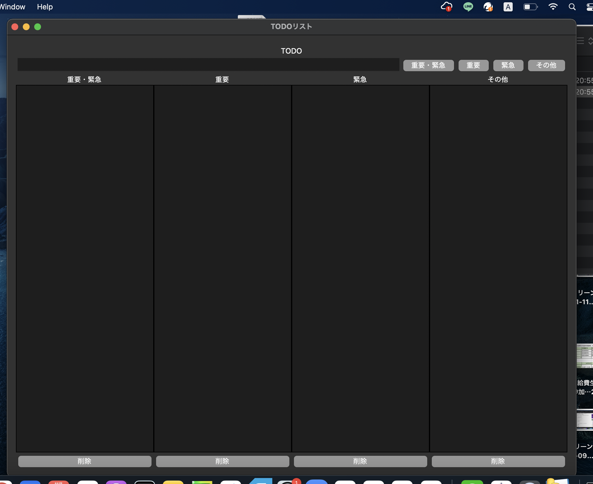
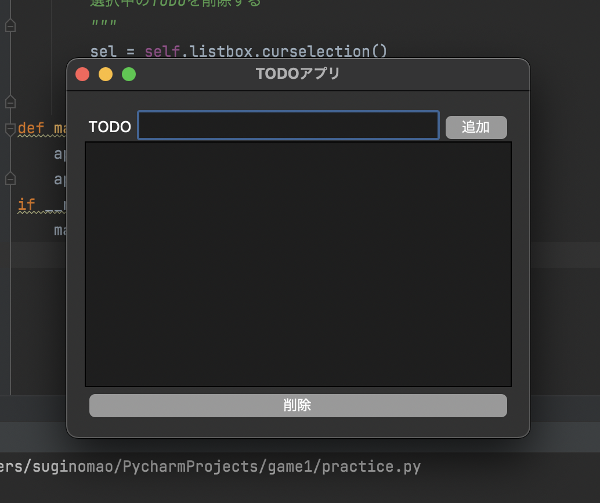

メモ
- breakでループを終了できる。
- while文：無限ループを繰り出せる
- ライブラリ（＝モジュール、パッケージ）は、プログラミング上でよく使う機能や便利な機能を簡単に使えるようにしたツールのこと。
- import random＝ランダムのライブラリを使うということ（ランダムのものは標準ライブラリ）
- 標準ライブラリ＝Pythonにもともと入っているライブラリ
- 外部ライブラリ＝世界中の人々が開発してくれたライブラリ、インポートする前にターミナル（macの場合）でインストールする必要あり。
課題
班で出た案：ゲーム、スケジュール帳→杉野：ToDoリスト作成を選択
完成品（画像）

ネットで探したソースコードは：
Qiita 簡単で早い！Python3のTkinterを使って作るTODOアプリ（外部サイト）より
元のコード
- # -*- coding: utf-8 -*-
- import tkinter as tk
- class App:
- def __init__(self):
- # ウィンドウを初期化
- self.master = tk.Tk()
- self.master.title('TODOアプリ')
- self.master.geometry('400x300')
- self.master.configure(padx=16, pady=16)
- # TODO入力エリアを作成
- self.input_area = InputArea(self.master)
- self.input_area.pack(side='top', fill='x')
- self.input_area.click_add_btn = self.click_add_btn
- # TODOリストの表示エリアを作成
- self.list_area = ListArea(self.master)
- self.list_area.pack(side='bottom', expand=True, fill='both')
- def mainloop(self):
- # masterに処理を委譲
- self.master.mainloop()
- def click_add_btn(self):
- """
- 入力エリアの追加ボタンが押されたら呼ばれる
- 入力エリアの入力値をリストエリアに追加する
- """
- todo = self.input_area.entry.get() # 入力値を取得
- self.input_area.entry.delete(0, 'end') # 入力行に残ったテキストを削除
- self.list_area.listbox.insert('end', todo) # リストにTODOを追加
- class InputArea(tk.Frame):
- """
- TODOの入力エリア
- ユーザーの入力を処理する
- ユーザーが入力したTODOテキストを追加ボタンでリストに追加するのが役割
- """
- def __init__(self, master):
- super(InputArea, self).__init__(master)
- # ハンドル
- self.click_add_btn = None
- # ラベルの作成
- self.label = tk.Label(self, text='TODO')
- self.label.pack(side='left')
- # 入力行の作成
- self.entry = tk.Entry(self)
- self.entry.pack(side='left', expand=True, fill='x')
- # 追加ボタンの作成
- self.add_btn = tk.Button(self, text='追加', command=self._click_add_btn)
- self.add_btn.pack(side='left')
- def _click_add_btn(self):
- if self.click_add_btn:
- self.click_add_btn()
- class ListArea(tk.Frame):
- """
- TODOリストの表示エリア
- ユーザーが入力したTODOが表示される
- """
- def __init__(self, master):
- super(ListArea, self).__init__(master)
- # リストの作成
- self.listbox = tk.Listbox(self, height=5)
- self.listbox.pack(side='top', expand=True, fill='both')
- # 削除ボタンの作成
- self.del_btn = tk.Button(self, text='削除', command=self._click_del_btn)
- self.del_btn.pack(side='bottom', fill='x')
- def _click_del_btn(self):
- """
- 選択中のTODOを削除する
- """
- sel = self.listbox.curselection()
- for i in sel[::-1]:
- self.listbox.delete(i)
- def main():
- app = App()
- app.mainloop()
- if __name__ == '__main__':
- main()
イメージ

上記ソースコードをコピペし、ここから自分用に一部変更した。
変更後
- # -*- coding: utf-8 -*-
- import tkinter as tk
- #ウインドウを作る。関数をラップしていく。（クッションのように関数の中に関数を隠すことを、関数をラップ（Wrap）すると言う。関数の外側にクッションを1つ作り、設計をしやすくする）
- class App:
- def __init__(self):#defに続いて関数を宣言、（）に引数（関数に処理してもらう値）を入れられる。__init__はある型から個別の実体を作成する感じ。
- # ウィンドウを初期化
- self.master = tk.Tk()
- self.master.title('TODOリスト')
- self.master.geometry('1000x1000')
- self.master.configure(padx=16, pady=16)
- # TODO入力エリアを作成・4種類に入力を分ける
- self.input_area = InputArea(self.master)
- self.input_area.pack(side='top', fill='x')
- self.input_area._click_add_btn_a = self.click_add_btn_a
- self.input_area._click_add_btn_b = self.click_add_btn_b
- self.input_area._click_add_btn_c = self.click_add_btn_c
- self.input_area._click_add_btn_d = self.click_add_btn_d
- # TODOリストの表示エリアを作成・４種類に表示エリアを分ける
- self.list_area_a = ListArea_a(self.master)
- self.list_area_a.pack(side='left', expand=True, fill='both')
- self.list_area_b = ListArea_b(self.master)
- self.list_area_b.pack(side='left', expand=True, fill='both')
- self.list_area_c = ListArea_c(self.master)
- self.list_area_c.pack(side='left', expand=True, fill='both')
- self.list_area_d = ListArea_d(self.master)
- self.list_area_d.pack(side='left', expand=True, fill='both')
- def mainloop(self):#ループ処理
- # masterに処理を委譲
- self.master.mainloop()
- def click_add_btn_a(self): # 追加ボタン（重要・緊急）
- """
- 入力エリアの追加ボタンが押されたら呼ばれる
- 入力エリアの入力値をリストエリアに追加する
- """
- todo = self.input_area.entry.get() # 入力値を取得
- self.input_area.entry.delete(0, 'end') # 入力行に残ったテキストを削除
- self.list_area_a.listbox_a.insert('end', todo) # リストにTODOを追加
- def click_add_btn_b(self): # 追加ボタン（緊急）
- """
- 入力エリアの追加ボタンが押されたら呼ばれる
- 入力エリアの入力値をリストエリアに追加する
- """
- todo = self.input_area.entry.get() # 入力値を取得
- self.input_area.entry.delete(0, 'end') # 入力行に残ったテキストを削除
- self.list_area_b.listbox_b.insert('end', todo) # リストにTODOを追加
- def click_add_btn_c(self): # 追加ボタン（緊急）
- """
- 入力エリアの追加ボタンが押されたら呼ばれる
- 入力エリアの入力値をリストエリアに追加する
- """
- todo = self.input_area.entry.get() # 入力値を取得
- self.input_area.entry.delete(0, 'end') # 入力行に残ったテキストを削除
- self.list_area_c.listbox_c.insert('end', todo) # リストにTODOを追加
- def click_add_btn_d(self): # 追加ボタン（その他）
- """
- 入力エリアの追加ボタンが押されたら呼ばれる
- 入力エリアの入力値をリストエリアに追加する
- """
- todo = self.input_area.entry.get() # 入力値を取得
- self.input_area.entry.delete(0, 'end') # 入力行に残ったテキストを削除
- self.list_area_d.listbox_d.insert('end', todo) # リストにTODOを追加
- class InputArea(tk.Frame):
- """
- TODOの入力エリア
- ユーザーの入力を処理する
- ユーザーが入力したTODOテキストを追加ボタンでリストに追加するのが役割
- """
- def __init__(self, master):
- super(InputArea, self).__init__(master)
- # ハンドル
- self.click_add_btn = None
- # ラベルの作成
- self.label = tk.Label(self, text='TODO')
- self.label.pack(side='top')
- # 入力行の作成
- self.entry = tk.Entry(self)
- self.entry.pack(side='left', expand=True, fill='x')
- # 追加ボタンの作成・４種類に分ける
- self.add_btn_a = tk.Button(self, text='重要・緊急', command=self._click_add_btn_a)
- self.add_btn_a.pack(side='left')
- self.add_btn_b = tk.Button(self, text='重要', command=self._click_add_btn_b)
- self.add_btn_b.pack(side='left')
- self.add_btn_c = tk.Button(self, text='緊急', command=self._click_add_btn_c)
- self.add_btn_c.pack(side='left')
- self.add_btn_d = tk.Button(self, text='その他', command=self._click_add_btn_d)
- self.add_btn_d.pack(side='left')
- def _click_add_btn_a(self):
- if self._click_add_btn_a:
- self._click_add_btn_a()
- def _click_add_btn_b(self):
- if self._click_add_btn_b:
- self._click_add_btn_b()
- def _click_add_btn_c(self):
- if self._click_add_btn_c:
- self._click_add_btn_c()
- def _click_add_btn_d(self):
- if self._click_add_btn_d:
- self._click_add_btn_d()
- class ListArea_a(tk.Frame):#(重要・緊急）
- """
- TODOリストの表示エリア
- ユーザーが入力したTODOが表示される
- """
- def __init__(self, master):
- super(ListArea_a, self).__init__(master)
- self.label = tk.Label(self, text='重要・緊急')#リストのラベル
- self.label.pack(side='top')
- # リストの作成
- self.listbox_a = tk.Listbox(self, height=5)
- self.listbox_a.pack(side='top', expand=True, fill='both')
- # 削除ボタンの作成
- self.del_btn = tk.Button(self, text='削除', command=self._click_del_btn_ad)
- self.del_btn.pack(side='bottom', fill='x')
- def _click_del_btn_ad(self):
- """
- 選択中のTODOを削除する
- """
- sel = self.listbox_a.curselection()
- for i in sel[::-1]:
- self.listbox_a.delete(i)
- class ListArea_b(tk.Frame):#(重要）
- """
- TODOリストの表示エリア
- ユーザーが入力したTODOが表示される
- """
- def __init__(self, master):
- super(ListArea_b, self).__init__(master)
- self.label = tk.Label(self, text='重要') # リストのラベル
- self.label.pack(side='top')
- # リストの作成
- self.listbox_b = tk.Listbox(self, height=5)
- self.listbox_b.pack(side='top', expand=True, fill='both')
- # 削除ボタンの作成
- self.del_btn = tk.Button(self, text='削除', command=self._click_del_btn_bd)
- self.del_btn.pack(side='bottom', fill='x')
- def _click_del_btn_bd(self):
- """
- 選択中のTODOを削除する
- """
- sel = self.listbox_b.curselection()
- for i in sel[::-1]:
- self.listbox_b.delete(i)
- class ListArea_c(tk.Frame):#(緊急）
- """
- TODOリストの表示エリア
- ユーザーが入力したTODOが表示される
- """
- def __init__(self, master):
- super(ListArea_c, self).__init__(master)
- self.label = tk.Label(self, text='緊急') # リストのラベル
- self.label.pack(side='top')
- # リストの作成
- self.listbox_c = tk.Listbox(self, height=5)
- self.listbox_c.pack(side='top', expand=True, fill='both')
- # 削除ボタンの作成
- self.del_btn = tk.Button(self, text='削除', command=self._click_del_btn_cd)
- self.del_btn.pack(side='bottom', fill='x')
- def _click_del_btn_cd(self):
- """
- 選択中のTODOを削除する
- """
- sel = self.listbox_c.curselection()
- for i in sel[::-1]:
- self.listbox_c.delete(i)
- class ListArea_d(tk.Frame):#(その他）
- """
- TODOリストの表示エリア
- ユーザーが入力したTODOが表示される
- """
- def __init__(self, master):
- super(ListArea_d, self).__init__(master)
- self.label = tk.Label(self, text='その他') # リストのラベル
- self.label.pack(side='top')
- # リストの作成
- self.listbox_d = tk.Listbox(self, height=5)
- self.listbox_d.pack(side='top', expand=True, fill='both')
- # 削除ボタンの作成
- self.del_btn = tk.Button(self, text='削除', command=self._click_del_btn_dd)
- self.del_btn.pack(side='bottom', fill='x')
- def _click_del_btn_dd(self):
- """
- 選択中のTODOを削除する
- """
- sel = self.listbox_d.curselection()
- for i in sel[::-1]:
- self.listbox_d.delete(i)
- def main():
- app = App()
- app.mainloop()
- if __name__ == '__main__':
- main()
デスクトップアプリにする方法は
こちら
作成したデータのダウンロードは
こちら
変更点
- ボタンの数を１つから「重要・緊急」「重要」「緊急」「その他」の４つに増やした。
- リストの枠も同様に４つに増やし、それぞれにラベルを付けた。
- 各入力事項を重要度・緊急度に分けて登録できるようにした。
課題（解決方法がわからなかった）
- 削除ボタンを一つにしたい。
- １つの項目を各欄に自由に移動させたい。
- デザインをポップな見た目にしたい。
- データを保存できる用にしたい。
- リストを４つ作った分コードも全体的に×４で書いたが、もしかしたらうまくコードを省略できるのでは？
参考サイト(外部サイト）
前の画面に戻る